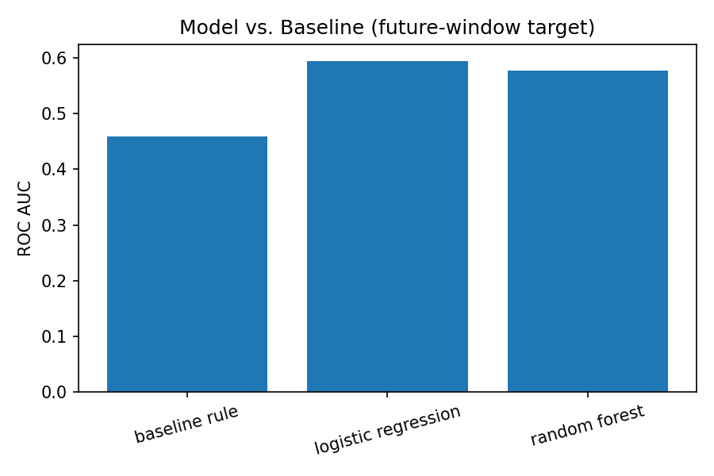

A decision-support ranking model for prioritizing content review, validated with a genuine future-window target against a transparent baseline rule.
This project studies which observable content and search signals predict whether a page's visibility declines the following month, using FlyRank's warehouse release. Features were built from March 2026 (impressions, clicks, position, word count, staleness), and the target was defined from a genuinely future window — April 2026 impressions dropping below 70% of March impressions — on the 60,744 content items with meaningful March visibility. A transparent staleness-and-visibility baseline rule was compared against Logistic Regression and Random Forest models on a client-grouped holdout split. Logistic Regression reached the best result, an ROC AUC of 0.595 and average precision of 0.426 against a 33.3% test-set base rate, a real but modest lift over the 0.459 AUC baseline rule. The output is intended as a decision-support ranking for content reviewers, not proof that any signal causes future decline.
Content teams at scale face more candidate pages than they have time to review. The decision this work supports is: which pages should a strategist look at first?
Getting this wrong carries two different costs, and they are not symmetric. A false positive — flagging a page that didn't actually decline — wastes a reviewer's limited time. A false negative — missing a page that genuinely loses visibility — is more expensive, since the problem compounds unnoticed until the next review cycle. This asymmetry is why the project produces a ranked, evidence-backed queue rather than a single pass/fail threshold.
A fixed rule can only combine the signals a human already thought to combine, at fixed thresholds. This paper tests whether a model that weighs several signals jointly earns a real, non-circular lift over that fixed rule — or whether the rule is good enough on its own.
This analysis uses the FlyRank internship warehouse release, specifically fact_content_daily_performance (joined to dim_content for content-level metadata) across two consecutive months: March 2026, used strictly to build features, and April 2026, used strictly to compute a future outcome.
The March feature window contains 331,437 content-client rows after cleaning. The April target window contains 362,172 content-level rows. Restricting to content items with meaningful March visibility (impressions at or above the 50th percentile, 242) left 60,744 eligible content items for labeling.
This study deliberately excludes any product-computed field — health_score, priority_score, action_type, or refresh flags. These fields are not shipped in this anonymized release, and would risk circularity if they were. No raw client names, domains, URLs, or private queries appear anywhere in this dataset or in this paper. Pseudonymous IDs (content_hash_id, client_hash_id) are used only for joining and grouping, never as model features.
Two candidate signals were checked against real bucketed data before building the baseline rule.
| Days since update | n | Median impressions | Median CTR |
|---|---|---|---|
| <90d | 60,674 | 1,536 | 0.00186 |
| 90–180d | 59 | 4,276 | 0.00157 |
| 180–365d | 11 | 490 | 0.00297 |
Verdict: MIXED. The <90d bucket holds almost all of the data (60,674 of 60,744 rows); the two older buckets are far too small (59 and 11 rows) to draw a reliable conclusion from, and their values don't move in a consistent direction relative to each other. This signal needs a larger or differently-binned sample before a confident verdict can be reached.
| Position tier | n | Median CTR | Median impressions |
|---|---|---|---|
| 1–3 | 5,247 | 0.00279 | 2,436 |
| 4–10 | 29,982 | 0.00238 | 1,720 |
| 11–20 | 13,328 | 0.00169 | 1,079.5 |
| 21+ | 12,187 | 0.00066 | 1,575 |
Verdict: CONFIRMED. Median CTR declines in a broadly consistent, monotonic pattern from the best position tier (0.00279) to the worst (0.00066), matching the underlying logic behind the CTR-fix flag.
| Feature | Available at decision time because… |
|---|---|
impressions_90d | March's own recorded measurement. |
clicks_90d | March's own recorded measurement. |
avg_position | March's own observed ranking position. |
word_count | Static content attribute, unaffected by which month is examined. |
days_since_update | Computed with the update date capped at the end of March, so no future update leaks in. |
target = 1 if a content item's April impressions fell below 70% of its March impressions, restricted to items with above-median March visibility. This is a genuinely future-observed outcome: the label is built entirely from April data, a month the model's features never see.
The baseline flags a page stale_visible_page if its March days_since_update is at or above the 70th percentile and its March impressions_90d is at or above the 60th percentile (242). 24,304 of 60,744 eligible rows were flagged.
The data was split by client, using a grouped shuffle split (70/30 train/test) confirmed to have zero client overlap between the two sides. This avoids letting the model partially memorize a client's site-wide patterns from training and then "recognize" that same client in testing.
Because the target is computed from April data and no feature draws from April, and because days_since_update is capped at the March window boundary, this design avoids the same-window circularity found in an earlier version of this analysis (where a rule-derived, same-window target let a model trivially reconstruct the label from its own inputs). Feature importance in Chapter 5 is used as a secondary check that no single feature is doing the label's own work.
| Method | ROC AUC | Average Precision |
|---|---|---|
| Baseline rule | 0.459 | 0.322 |
| Logistic Regression | 0.595 | 0.426 |
| Random Forest | 0.577 | 0.407 |

Against a 33.3% test-set base rate, both models clear the baseline on every metric: Logistic Regression reaches the best result (0.595 AUC, 0.426 average precision), a real lift over the baseline rule's 0.459 AUC and 0.322 average precision. Random Forest performs close behind (0.577 AUC, 0.407 average precision). Notably, the baseline rule's AUC sits just under chance level (0.5) for predicting next-month decline — the rule's individual thresholds carry little discriminative power on their own, and the model's advantage comes from combining signals rather than from any one signal being independently strong.
Feature importance from the Random Forest is spread fairly evenly across three features — word_count (0.300), impressions_90d (0.292), and avg_position (0.290) — with clicks_90d contributing less (0.106) and days_since_update contributing almost nothing (0.012). No single feature dominates, which is consistent with a genuinely non-circular result: had the target still been derived from the same features feeding the model, one or two features would be expected to dominate importance, as was observed in an earlier same-window version of this analysis.
On the test set, the model produced 114 false positives (flagged, no real April decline) and 871 false negatives (missed, real April decline occurred). The much larger false-negative count indicates the model is currently conservative — it under-flags true decliners more often than it raises false alarms, which matters for how a reviewer should interpret a low score: absence of a flag is weaker reassurance than presence of one is a warning.
The strongest, most consistent pattern among the top-ranked candidates combines high March visibility — impressions in the tens of thousands for several top entries — with roughly 120+ days since the last recorded content update (median days-since-update across the top 20 was 124; median impressions was 16,204).
A reviewer using this ranking should treat a high score as a starting hypothesis to verify, not an automatic verdict. Cases most likely to be false alarms include recently consolidated or redirected pages, and pages whose "last updated" timestamp doesn't reflect a real content change (e.g. a metadata-only edit). Given the false-negative pattern observed above, a reviewer should also periodically spot-check pages just below the flagging threshold, since the model is more likely to miss a real decliner than to raise a false alarm.